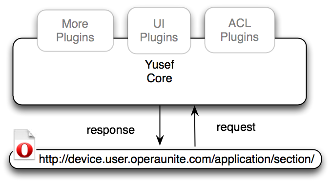
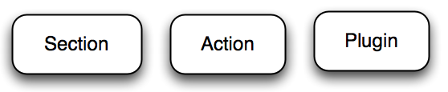

Yusef: the Unite Server Framework
24th April 2012: Please note
Starting with Opera 12, Opera Unite will be turned off for new users and completely removed in a later release. If you're interested in building addons for Opera, we recommend going with our extensions platform — check out our extensions documentation to get started.
Content contributions by Mathieu Henri, Hans S. Tømmerholt and Gautam Chandna.
Updated on 3rd February 2010.
Introduction
This article gets you started with Opera Unite’s Server Framework: Yusef. After reading this article, you will be able to start harnessing the strength of Yusef. Included is a simple example to get things going.
If you have not read the Opera Unite developer primer, we encourage you to do so before starting with Yusef.
The article structure is as follows:
Basic Concepts
The Unite Server Framework — or Yusef — was started as a way to manage different functional requirements of Opera Unite applications. It was initially created by Opera’s Web Apps team to ease the development of Opera Unite applications. It soon evolved into a large framework covering multiple aspects of making an application.
For a developer, Yusef helps you take care of things such as providing a UI template, form POST validation and access control (amongst others). It evolved out of a need to modularize work in Opera Unite and is here to ease your work.
Figure 1: Yusef and an Opera Unite application page.
Think of Yusef as a daemon service that runs in the background, and your script as server-side JavaScript. After all that is processed, a HTML page is dumped, which is the Opera Unite application.
Yusef Core
Yusef Core provides the backbone of an Opera Unite application and deals with mount points, the sharing of static files, section listeners (the root or subpaths of the application), form actions (validated by means of a cryptographic nonce — a secure one-time random number used for authentication) and features some hooks to extend these basic functions and add plugins.
There are three main parts in the Yusef Core. Section and Actions are ways Yusef listens to events triggered by users in an Opera Unite application page, while Plugins introduce extra features such as access control.
Figure 2: The three fundamentals of the Yusef Core.
Section
Sections are the topmost subpath in which a request is made (ie http://device.user.opeaunite.com/application/section). Developers can add a section listener method to respond to requests made into a given top most subpath, or at the top _index level of the service. For example, a section listener might listen to the URL subpath and fire an event called showFileList when users view the page with a subpath showFileList — http://device.user.operaunite.com/application/showFileList. The event can then perform an action, such as showing a list of files.
addSectionListener is a Yusef method that listens to HTTP requests and registers them to a function. It allows Yusef to listen and perform actions when a page is loaded. The event is tied to a path (section), for example http://device.user.operaunite.com/application/sectionevent1/ can be tied to addSectionListener('sectionevent1', function(),args);
Yusef Core itself creates a section called static which serves all content located in the application’s public_html folder. This is used to serve static resources such as the icon, style sheets, scripts and graphics of the application.
Action
Unite actions are the way Yusef deals with a form POST. Developers can register an action listener to process the data posted by a form. The function registerUniteActionListener listens to POST requests and registers each of them to a specific function. Each POST request corresponds to a unique function.
For example, a form may submit data to the root of the application - http://device.user.operaunite.com/application/
<input type="hidden" name="unite-action" value="<action name>">
<input type="hidden" name="unite-nonce" value="<session.nonce>">
The form POST must include these two arguments which is needed by Yusef to validate and forward the entire request to your assigned actionListener. The cryptographic nonce is used for authentication.
Plugin
Yusef provides several plugins, amongst them are ACL and UI plugins. Developers who want to extend Yusef functionality can either create a new plugin or extend the public method of Yusef plugins.
We will be looking more closely at plugins in future articles.
Example
Before we dive into the code, let’s revisit a few ideas. Yusef is a server-side framework. Code written will be processed on the backend. The entry point of an Opera Unite application is a special index.html page, used to invoke Yusef and other server side functions and libraries. This index.html is not used to display a page but just to invoke scripts. You can think of the whole process as a daemon.
In this example, we want to start an Opera Unite application with Yusef as the framework. Download a Yusef Core example. The basic file structure is
- index.html
- config.xml
- libraries/yusef
- libraries/Markuper
- libraries/PSO
- serverScripts/helloYusef.js
- templates/helloYusef.html
- public_html/style.css
config.xml
config.xml is the descriptor of an Opera Unite application. It is where we tell users the application name and what this application is about. Opera Unite's config.xml structure is identical to the Opera Widgets config.xml specification.
<?xml version="1.0" encoding="utf-8"?>
<widget network="public" version="1.0" id="Unite/helloYusef/" >
<widgetname>Hello Yusef</widgetname>
<description>An example application that uses Yusef, access control and Markuper.</description>
<feature name="http://xmlns.opera.com/webserver">
</feature>
<feature name="http://xmlns.opera.com/fileio">
</feature>
<icon width='64' height='64' >public_html/favicon.64x64.png</icon>
<icon width='48' height='48' >public_html/favicon.48x48.png</icon>
<icon width='32' height='32' >public_html/favicon.32x32.png</icon>
<icon width='16' height='16' >public_html/favicon.16x16.png</icon>
<author>
<name>Gautam Chandna, Opera Software ASA</name>
</author>
</widget>
We are calling our application "Hello Yusef". It is mandatory to specify the Web server and File I/O needed in our Opera Unite application.
Including File I/O in the application descriptor might be counter intuitive for applications that don’t need File I/O. However, File I/O is required for access to a sandbox for application data.
index.html
The entry point of an Opera Unite application is index.html. Remember that this index.html is used to invoke libraries and Yusef, not to display content.
There are two ways to invoke the libraries, one is to do it selectively as shown below.
<script src="libraries/PSO/pso.js"></script>
<script src="libraries/Markuper/template.js"></script>
<script src="libraries/yusef/common.js"></script>
<script src="libraries/yusef/core.js"></script>
Core.js and common.js are both Yusef files. We can savely ignore them for now. We have also specified Markuper as our UI template.
The second and preferred way is to use the new libraryLoader, we are able to load all the libraries at one go and choose the Yusef plugin using Libraries.setTail function.
<script src="libraries/libraryLoader/librariesLoader.js"></script>
<script>
Libraries.setTail( 'yusef.translation', 'yusef.ui', 'yusef.acl' );
Libraries.load();
</script>
ServerScripts/HelloYusef.js
Opera Unite applications that use Yusef as the framework have a magic folder called serverScripts. Scripts in this folder are automatically invoked and all scripts related to the server side of your application can be placed in this folder.
Yusef.addSectionListener
(
'_index',
function( connection )
{
...
}
);
Inside HelloYusef.js, Yusef functions are invoked. Member functions of Yusef are invoked through a Yusef singleton — a class/object that is instantiated once, hence Yusef is always the object name. For example addSectionListener function is invoked via Yusef.addSectionListener.
The addSectionListener listens to subpaths in a URI. For example, when accessing device.user.operaunite.com/application/addfile, the listener for addfile is fired.
Here we have a listener listening to _index — which is fired when the top level URI of an Opera Unite application is accessed.
function( connection )
{
var tmpl = new Markuper( 'templates/helloYusef.html' );
var data = {
title : connection.request.path,
servicePath : opera.io.webserver.currentServicePath,
content : "Hello Yusef",
stylesheet : 'style.css'
}
tmpl.parse( data );
return tmpl.html();
}
Let’s look at the function that is invoked. The Markuper template library is called with the location of the template as an argument. An object notation variable data is instantiated with values. Among them is the servicePath identified using the opera.io.webserver object. For more information about opera.io.webserver, you can take a look at the Opera Unite API.
Finally, we explicitly parse the template in order to proceed with the data binding before returning the template.
After this, you might want to read up on Rapid application development using the Opera Unite Yusef library to find out more about getData() function that allows us to retrieve various different application data
templates/helloYusef.html
This is the final piece of the puzzle.
<!doctype html>
<html>
<head>
<meta http-equiv="Content-Type" content="text/html; charset=utf-8"/>
{{data.title}}
<link
rel="stylesheet"
type="text/css"
href="{{data.servicePath}}static/{{data.stylesheet}}">
</head>
<body>
<div>
{{data.content}}
</div>
</body>
</html>
The Markuper template library outputs the page templates/helloYusef.html, which is the page presented to your users.
A special syntax is used to retrieve the JavaScript value bound to the template. For example {{data.servicePath}} references the servicePath value previously specified in helloYusef.js.
Figure 3: Hello Yusef example.
There you have it. An Opera Unite application using the Yusef framework is created. You can download the source code of our helloYusef example.
Summary
In this article, we have introduced Yusef, Opera Unite’s Server Framework. There are three parts to Yusef, section (which listens to a URL subpath), action (which deals with form POST) and plugin.
You can slowly increase the complexity by adding more plugins. One such interesting plugin is the Yusef UI plugin that ties together Opera Unite’s UI templating engine called Markuper.
We will have a closer look at Yusef plugins in a future article.
Reference Materials
You might want to take a look at these other Opera Unite articles or libraries.
Zi Bin Cheah

Web Evangelist in the Developer Relations Team at Opera Software ASA.
This article is licensed under a Creative Commons Attribution, Non Commercial - Share Alike 2.5 license.
Comments
The forum archive of this article is still available on My Opera.
No new comments accepted.